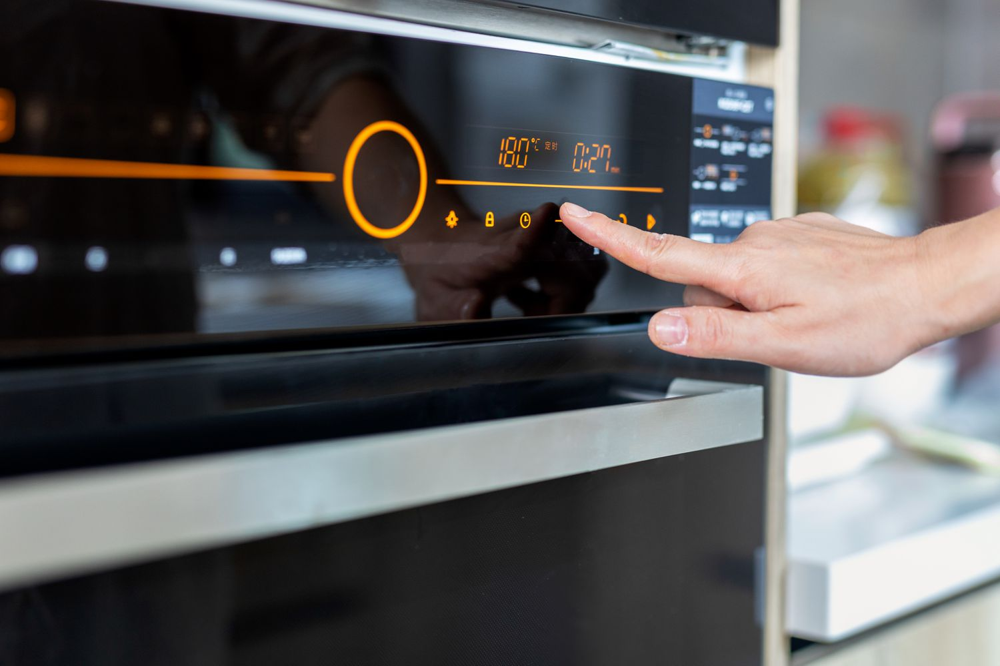
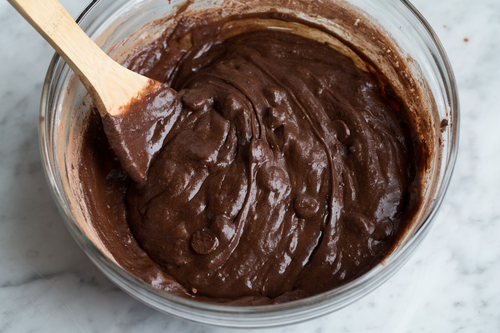
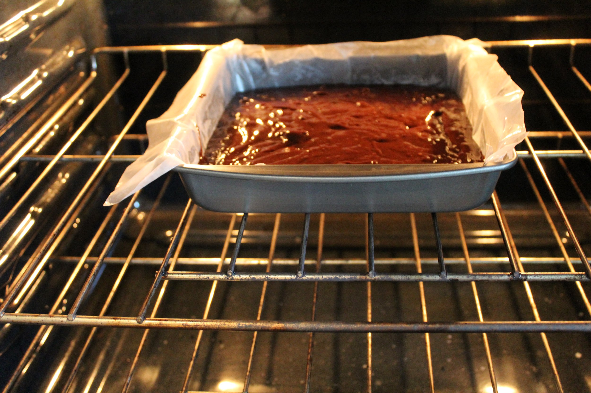
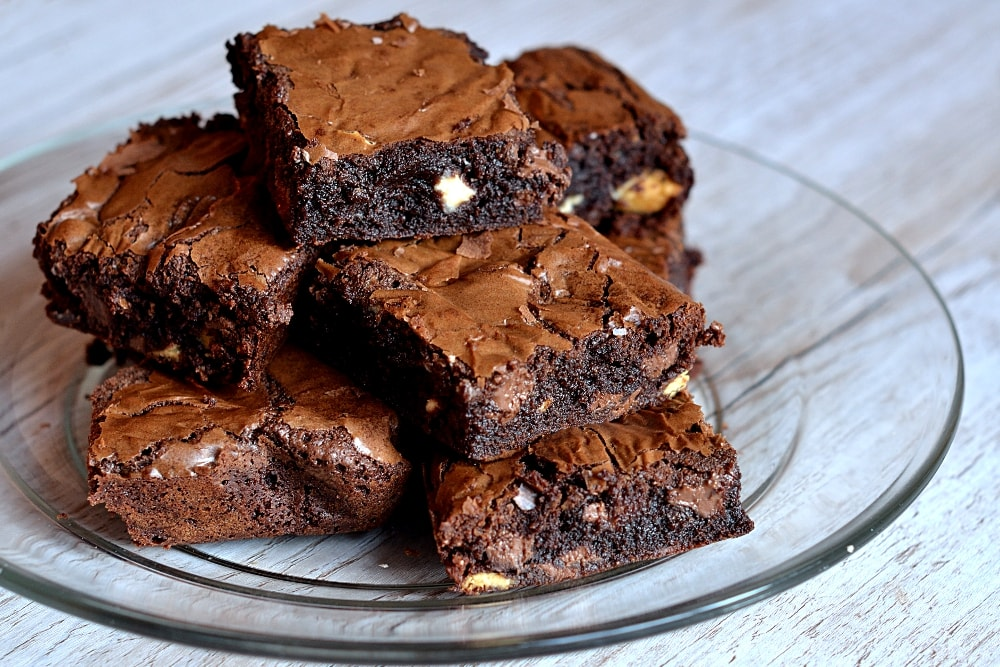

1. Precalentar el horno:
Precalienta tu horno a 175°C (350°F) y engrasa ligeramente un molde cuadrado de 20x20 cm.

2. Mezclar ingredientes
- Derrite la mantequilla en el microondas o en una cacerola pequeña.
- En un bol grande, mezcla la mantequilla derretida con el azúcar, los huevos y el cacao en polvo.
- Añade la harina, la sal y el polvo de hornear, y mezcla hasta que esté bien combinado.

3. Hornear:
Vierte la mezcla en el molde preparado y hornea durante 20-25 minutos o hasta que un palillo insertado en el centro salga limpio.

4. Enfriar y servir
Deja enfriar los brownies en el molde antes de cortarlos en cuadrados y servir.
